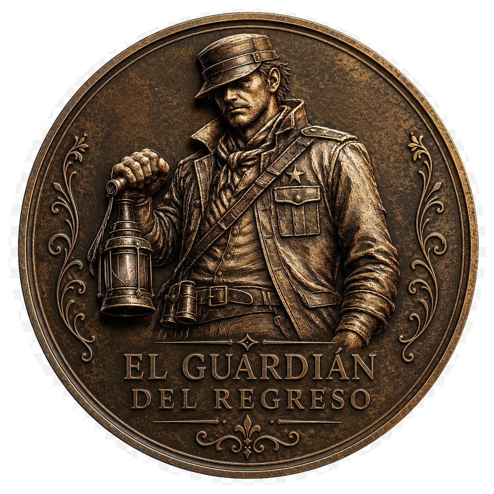

Signature product

Tequila
Blanco
100% agave tequila created for those seeking a clean, direct and authentic expression of Mexican agave.
- 43% Alc. Vol.
- 100% Agave
- Product of Mexico
Enjoy responsibly
This website contains information about alcoholic beverages and is intended only for adults of legal drinking age in their country of residence.
Mexican craft spirits and agave wines created to celebrate life, tradition and the victorious return home.
O.K. Cero Muertos is born from a legend of return, honor and life.
Legend has it that when there were no human casualties on the battlefield, soldiers returned and wrote on the door: O.K., meaning:
Zero Killed.CERO MUERTOS.
From that idea comes our name: a celebration of the victorious return, of coming home, gathering with loved ones and raising a glass to life.
From the lands of Jalisco, where agave is root, culture and destiny, we transform that story into artisanal tequila, agave wines with exotic fruits, and expressions crafted with Mexican oficio.
We celebrate life with tequila and wine. We are Mexicans committed to our values:God, Family and Freedom.
100% agave tequila created for those seeking a clean, direct and authentic expression of Mexican agave.

Artisanal fermented agave and exotic Mexican fruits. A different, fresh expression with its own identity.

An alcohol-free expression created for those who also want to be part of the toast.
From the heart of Mexico, our craft is born: selecting agave, caring for the process and creating artisanal expressions with identity.
We work with respect for the land, patience for time and pride in what is made in Mexico.

Every legend needs a guardian. The Guardian of the Return represents the way back: memory, protection, tradition and the light that guides us home.
He is not merely decorative. He is the symbol of a promise:
Return with life. Return with history. Return with honor.
The return is just beginning. Join the journey of O.K. Cero Muertos: new products, stories, craft processes, launches and moments of celebration.